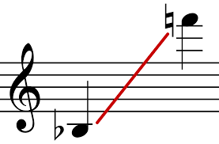
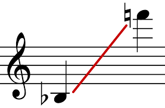

Segundo post
Descripción del segundo post
Este sería el otro texto del artículo en sí. Las movidas y mogudetas del saxofonne, pero, yatusabeh, es otra versionen.
Descripción del segundo post
Este sería el otro texto del artículo en sí. Las movidas y mogudetas del saxofonne, pero, yatusabeh, es otra versionen.